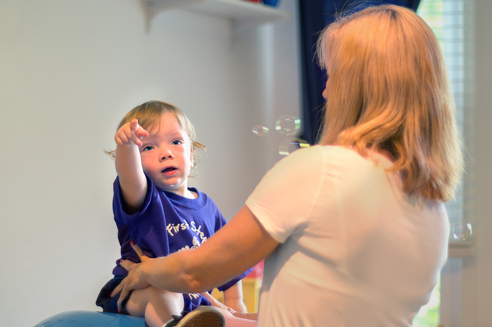

First Steps Physical Therapy
First Steps Physical TherapyHow We Can Help
First Steps Physical Therapy provides specialized pediatric physical and occupational therapy in a nurturing environment to improve the overall function of children with special needs. We emphasize highly skilled clinical care combined with family involvement and education.
We accept insurance:
- Aetna
- Aetna Better Health
- Cigna
- Highmark Blue Cross/Blue Shield
- Horizon Blue Cross/Blue Shield
- Independence Blue Cross
- Keystone First Health Plan
- Personal Choice
- United Health Care
- Select Private Insurance
Our Philosophy
Children develop and progress best in a nurturing environment. First Steps Physical Therapy provides that setting coupled with a pediatric physical and occupational therapist to deliver comprehensive rehabilitation for a wide range of children. We work closely with family members as well as pediatricians, pediatric specialists including speech therapists, vision and nutrition specialists in the area in order to provide team-based holistic developmental intervention.
